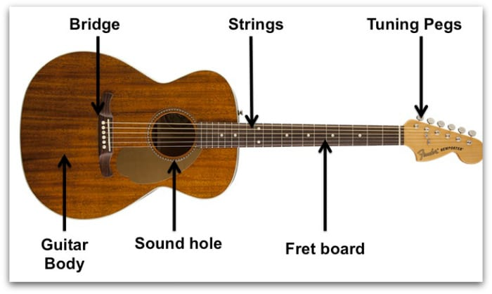

Запознаване с китарата
Китарата е един от най-красивите и популярни музикални инструменти. Ако обичаш музиката и искаш да се научиш да свириш, започваме с основите. Това не е трудно, но изисква малко търпение и желание!
Части на китарата
Първо, трябва да се запознаеш с различните части на китарата:
- Гриф: Това е дългата част на китарата, където поставяш пръстите си, за да изсвириш различни ноти и акорди.
- Тяло: Това е голямата част на китарата, която резонира звука.
- Струни: Китарата обикновено има шест струни. Те издават звуци, когато ги дръпнеш или удариш с пръст или перце.
- Прагчета: Малките метални линии на грифа, които разделят различните ноти.
Как да държим китарата
За да свириш добре, трябва да държиш китарата правилно. Ето как:
- Седни удобно на стол.
- Постави китарата върху десния или левия си крак (в зависимост от предпочитанията ти).
- Дръж гърба си изправен, за да избегнеш болки.
- Лявата ти ръка трябва да е свободна да се движи по грифа, а дясната да удря или дърпа струните.
Как да настроим китарата
Настройването на китарата е важно, за да звучи добре. За начало може да използваш апликация или електронен тунер. Ето основните ноти на струните:
- Шеста струна (най-дебелата): Ми (E)
- Пета струна: Ла (A)
- Четвърта струна: Ре (D)
- Трета струна: Сол (G)
- Втора струна: Си (B)
- Първа струна (най-тънката): Ми (E)
Първи упражнения
Преди да започнеш със сложните акорди и песни, е добре да упражниш някои основни движения:
- Дръпни всяка струна с дясната си ръка и слушай звука.
- Постави пръст на грифа върху някое прагче и удари съответната струна.
- Опитай да сменяш позицията на пръстите си, докато удряш струните.
Заключение
Започването на китара може да изглежда малко сложно, но с времето ще видиш, че е забавно и удовлетворяващо. Продължавай да се упражняваш и скоро ще можеш да свириш любимите си песни! Китарата е чудесен начин да се изразиш чрез музика и да впечатлиш приятелите си.